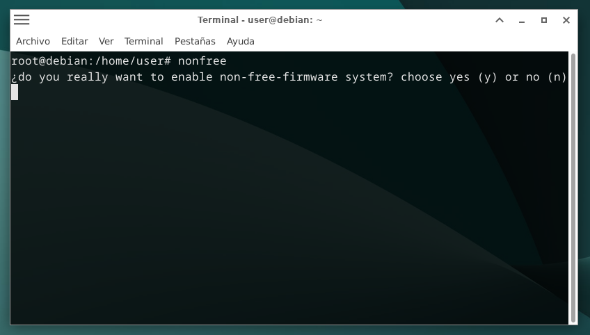
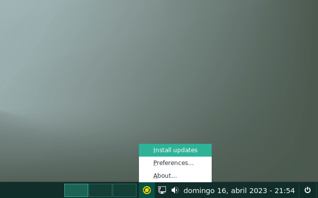

Auxtral
Auxtral es un proyecto cuyo principal objetivo es difundir el "software libre" y que el ussuario compruebe y juzgue por sí mismo sus virtudes y/o ventajas al igual que las del sistema operativo GNU / Linux, principalmente Debian, considerado por muchos como la mejor distribución de dicho SO.
Se compone de una cuidadosa selección de software sobre un "sistema base" Debian, diseñado especialmente para usuarios de otros sistemas operativos, principalmente propietarios o privativos, para que puedan experimentar al menos un acercamiento a GNU / Linux y al software libre en general.
Espero que les resulte una experiencia agradable navegar por las páginas de este sitio, así como interesante y productiva para quienes decidan descargar el ISO Auxtral 4 (Polaris Australiss) y probarlo. Muchas gracias
.
Arq. Guillermo E. Sosa
San Nicolás de los Arroyos
Province of Bs. AS.
Argentina Repúblic
Characterístics
Auxtral's policy regarding pre-installed applications is to have only the basic ones of an OS, plus those of system administration specific to the desktop environment selected by the user. All software packages in this distribution are "free software" and come mainly from the "main" section of the "official Debian Bookworm repositories". Those from other sources are specified under the heading "II. Packages from Other Sources" on the "Lisenses" page of this site.
Pre-installed Software
Auxtral comes with only the basic software needed, namely: Web Browser: Brave Browser; image viewer: Mirage; terminal: each Desktop Environment's own; video player: SM-Player; music player: Audacious; text editor: Pluma; partition manager: GParted, except in the KDE-Plasma version, which uses Parttition Manager; webcam software: Cheese in Cinnamon, Xfce, Mate and Budgie, and Kmoso in KDE-Plasma; Software Manager: Mintinstall, USB flash: balena-Etcher, calculator: Galculator, scanner: Simple Scan, and SkanLite in the case of KDE-Plasma, and Gdebi as package installer ". deb" package installer.
Added to this are administrative applications specific to each desktop environment. In the case of "file manager", Budgie and Plasma come with "Nemo" instead of "nautilus and dolphin"
You are going to install the specific applications according to your software needs and the destination you want to give your PC, being able to choose "free", "open source" or "non-free" applications. Freedom is yours. The installation is quick and easy, being able to do it from the Debian online repositories or by downloading the ".deb", "appimages", etc. packages. For more details about installing applications, please visit this page >> "Help" from the old site
Choise of repositories
Auxtral 4 (Polaris Australis), is installed by default with the "main" (free) repositories, no longer fully according to the "Debian Free Software Guidelines" (DFSG) as in the previous 3 versions, since in them "point 5" has been modified, to which the following paragraph is added at the end: "Official Debian media may include firmware that would not otherwise be part of the Debian system to allow the use of Debian with hardware that requires that firmware". Obviously referring to non-free firmware.
As mentioned in the "home" of this site, Auxtral is going to remain unchanged in its installer (Calamares), initially installing only with the "main" (free) component from the repositories.
However, the end user will be able to choose (as in Auxtraal versions 1, 2 and 3) if they want to stay in the free repositories or enable the "contrib" +"non-free" and "non-free-firmware", either by personal preference or by necessity, such as in the case of requiring a higher performance of your videocard, or in the case of requiring the use of a Wi-Fi connection to the Internet, even more so if you use a laptop, where by force of being honest it is not It is common for free firmwares to work. To install both these firmwares and those of your videocard consult the "help" pages.
To enable the "contrib" + "non-free" and "non-free-firmware" repositories, you can do it from a Terminal as the "root" user by running the "nonfree" command (script). This action will first ask you if you really want to make your system non-free. You must answer "yes" (y) or "no" (n) if you answer affirmatively it will enable the mentioned repositories and again it will ask for your consent to install new software and make a system update if clouded.
But: up to here you still have time to regret it, the "non-free" repositories have been enabled but no package has been installed. Be careful, the "default" option if you hit enter is "YES", therefore if I like I said sorry at the last moment press "n", no non-free package will be installed. But the /etc/apt/sources.list file is enabled with non-free repos. to return, in the console and first of all type "main". in this way the /etc/apt/sources.list will be re-enabled only with the free repos.
It is worth clarifying that you make the decision you make, you do it by your own choice and will. As the creator of Auxtral, I recommend staying within "software libre", so it should be considered that from this page I only inform you of the options you have, strictly rejecting the concept that I "urge" to use or install "non-free" software " on your PC.

System updates
An icon in the "System Tray" will notify you if updates are available, changing the original color (green or blue depending on the "icon theme you're using), to yellow or orange depending on the importance of the updates. Click on it and scroll to the "install updates" entry in the popup menu and click on it.
A terminal will open and an authentication window will ask you for your "root" password, enter it and press "enter". You will be shown the packages to update and you will be asked for confirmation; press "enter" again to update or "n" for negative.
You can also update the system by entering "Applications Menu" > "System/Administration" > "Auxtral Updates"
Terminal "romantics" can upgrade by opening it, and as root running the "upgr" script.
No longer for romantics, but "incorrigible stubborn" of the console, they can update with the command they prefer and I don't think it's important to explain them (they know them).
Note: in case you update in this last way, or for example with Synaptic, after doing so, execute the "osrx" script in the console, always as Superuser.

About GTK applications on KDE-Plasma
It is known that in QT desktops like KDE-Plasma, GTK applications do not "read" and print its global themes, look-and-feels or color-schemes on the screen, so when they are opened they will be displayed with the default theme, generally Adwaita, showing up with a totally different look than what we intended when we set our chosen look for our Plasma. Pay attention to this more, and as you saw above on this page (Pre-installed Software) it is clear that Auxtral Plasma DE incorporates some GTK applications: Nemo, Pluma, Galculator, mintinstall, etc. For this reason, when you choose a "color-schemes" of the so-called "Polaris" for the appearance of your desktop, you must resort to the "lxappearance" application (Start >> preferences >> LXAppearance) and there choose the same GTK theme and the same icon theme as your global theme or color-scheme of your plasma.
In this video >> "Integracion total de Gtk2 y Gtk3 En KDE Plasma", Zatiel on his youtube channel he exolates him very well.